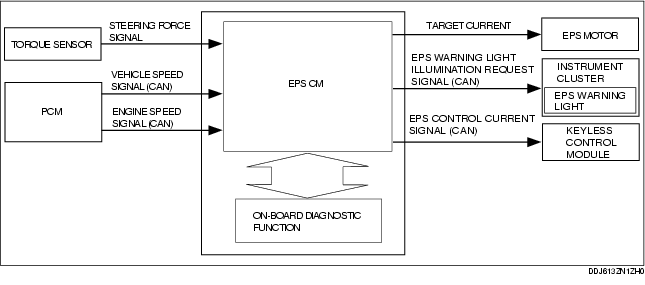
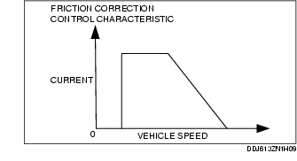

Electric power steering control module (EPS CM) construction and operation
Construction
• The EPS CM is installed on the front passenger side in the cabin.
• The module calculates the proper assist current based on the steering force signal from the torque sensor installed on the steering gear and linkage, and the vehicle and engine speed signals from the PCM using CAN communication, and then outputs the control current to the EPS motor.
Function table

Operation
Motor current control
- • The proper assist current is calculated based on the steering force signal from the torque sensor, and the vehicle speed signal from the PCM, and then the control current is output to the EPS motor.
- • Also, various control corrections are performed according to the vehicle driving conditions.
- - Base current control
-
• The base current is the fundamental current amount for driving the EPS motor and is calculated based on the steering force and vehicle speed signals.

- - Inertia correction control
- • The inertia correction control compensates for the influence caused by motor revolution inertia (insufficient torque when starting, torque continuance when stopping). The correction current to the base current is increased according to vehicle conditions.
- - Damping correction control
-
• The damping correction control reduces slight vibrations transmitted from the road surface (kickback) to the steering wheel using the motor control current. The correction current to the base current is either increased or decreased according to the vehicle conditions.

- - Friction correction control
- The friction correction control is calculated based on the estimated motor rotation speed of the EPS and vehicle speed signal.
•

System overheating protection control
- • The output current to the EPS is controlled to protect the EPS motor and EPS CM from a malfunction caused by overheating.
- - Turning limit control
- • - The turning limit gradually reduces current output to the EPS if the steering operation such as static steering is continued. If the turning limit is held, the turning limit control operates at a minimum of approx. 14 s.
- • The motor current will gradually return to normal after low voltage motor current is detected (current of 10 A or less), such as during high-speed driving or when driving in a straight line, or when the ignition switch is turned off. A maximum of 40 min is required to return to normal conditions.
-
• If the turning limit control is operated, the EPS warning light does not illuminate and the DTC is not stored in the memory.